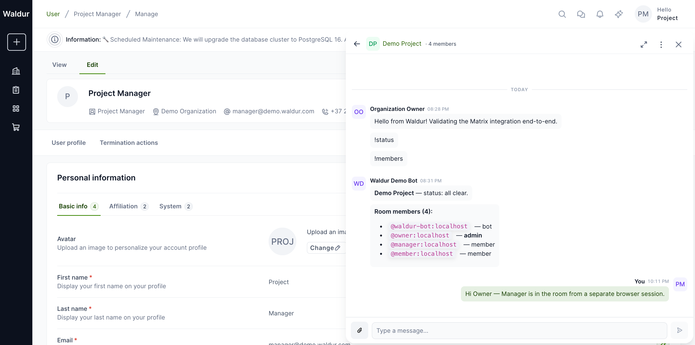
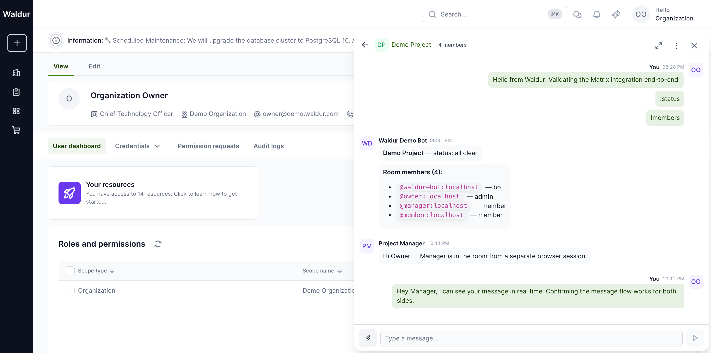

Matrix chat integration
Waldur integrates with the Matrix open communication
protocol as an Application Service (appservice). When the integration is on,
each Waldur project gets a Matrix room, project members are invited
automatically based on their roles, and operational queries (!status,
!orders, !members) are answered by a Waldur bot from inside the chat.
Conversations are rendered in the homeport drawer next to the Waldur UI, so
team members do not need a separate Matrix client.
The integration works with any Matrix homeserver that supports the
Application Service API (Synapse, Dendrite, Conduit/Tuwunel, …). The
examples in this guide use Tuwunel,
which is what the bundled docker/matrix-dev/docker-compose.yml brings up.
How the pieces fit together
graph TB
subgraph "Waldur Platform"
PROJ[Waldur Project]
ROOM[MatrixRoom]
PROFILE[MatrixUserProfile]
TASKS[Celery tasks]
WEBHOOK[Appservice webhook]
BOT[Bot commands]
EXPORT[History export]
end
subgraph "Matrix homeserver"
HS[Homeserver]
ROOMHS[Matrix room]
end
PROJ -->|Create room| ROOM
ROOM -->|sync_project_members| TASKS
TASKS -->|ensure user| PROFILE
PROFILE -->|invite + join| ROOMHS
HS -->|PUT events| WEBHOOK
WEBHOOK -->|dispatch| BOT
BOT -->|reply via bot user| ROOMHS
PROJ -->|pre_delete| ROOM
ROOM -->|disable + archive| EXPORT
ROOM -.->|room_id| ROOMHSWhen a Waldur project is provisioned for chat, a MatrixRoom row is
created and a celery task syncs every project member into the room via a
per-user MatrixUserProfile. Outbound events flow Waldur → homeserver
through the matrix-js-sdk login-token flow. Inbound events arrive over the
appservice webhook (PUT /_matrix/app/v1/transactions/{txnId}), are
deduplicated by txn_id, and dispatched to the bot-command handlers if
the sender holds an active project role. Project deletion runs the same
disable path that the staff "Disable room" action uses, optionally
exporting history before the room is archived.
Prerequisites
You need:
- A Matrix homeserver with the Application Service API enabled and reachable from Waldur over HTTP/HTTPS. The homeserver must be able to reach Waldur back via the URL you provide during setup (webhook callbacks).
- The homeserver's user-registration shared secret (Waldur uses it to provision the per-user Matrix accounts that drive the embedded chat).
- A staff account in Waldur. The Setup wizard, connectivity diagnostics, and the Settings tab are staff-only.
- For voice/video calls (optional): a LiveKit SFU and an
lk-jwt-servicereachable from the browser, advertised by the homeserver via.well-known/matrix/client'srtc_transportsblock (MSC4143).
The bundled docker/matrix-dev/ stack in the mastermind repo provides all
three components for local development; for production deployments you supply
your own.
Bringing up a local Matrix stack
From waldur-mastermind:
1 2 | |
This starts:
| Service | Port | Notes |
|---|---|---|
tuwunel |
6167 |
Homeserver, server_name=localhost |
livekit |
7880-7882 |
LiveKit SFU for Matrix RTC |
lk-jwt-service |
8090 |
Issues LiveKit JWTs after federated OpenID verification |
federation-tls |
8448 |
Self-signed TLS terminator the JWT service needs |
Health check:
1 2 3 | |
Each should return 200. Once Tuwunel is running, Waldur reaches it at
http://localhost:6167 and the browser reaches the LiveKit JWT service via
the Vite dev proxy (/lk-jwt → http://localhost:8090).
Configuring Waldur
Set the prerequisite Constance keys before running the Setup wizard. From a Django shell:
1 2 3 4 5 6 7 8 | |
You can do the same in the Django admin (/admin/constance/config/) — all
of these values are also editable through the Matrix chat → Settings tab
in the homeport once the Setup wizard has run at least once.
To make the per-project Communication tab visible in homeport, enable the
project.show_matrix_chat feature flag. The backend continues to gate
access on MATRIX_ENABLED regardless — the feature flag only toggles the UI.
After changing Constance values, the homeport reads them on its next full
page load (the /api/configuration/ response is cached in the SPA bootstrap).
Running the Setup wizard
In the homeport, open Administration → Matrix chat and click Setup appservice. The wizard generates fresh AS/HS tokens, persists them via Constance, and returns the registration YAML to copy into the homeserver. Re-running Setup rotates both tokens — you will need to update the homeserver's copy of the registration if you do.
You can also call the API directly:
1 2 3 4 | |
The response includes a bot_provision_status field. It is "ok" when the
bot user was registered on the homeserver, "failed: …" otherwise. The
common failure mode is M_UNKNOWN_TOKEN, which means the homeserver does
not yet have the appservice registered (see below).
Warning
The Waldur URL you supply must be reachable from inside the homeserver
process, not just from the operator's browser. For Tuwunel running in
Docker that reaches the host, use http://host.docker.internal:10780
(Linux/macOS Docker Desktop). For Kubernetes deployments you usually
want the in-cluster service DNS.
Registering the appservice on the homeserver
Tuwunel and other Conduit-family homeservers register appservices via an admin-room command rather than a config file. The first user registered on a fresh Tuwunel instance is automatically invited to the admin room. To register Waldur's appservice on the local dev stack:
1 2 3 4 5 6 | |
The response contains an access_token for @admin:localhost. List the
admin room (the only joined room):
1 2 | |
Send the registration YAML as a !admin appservices register message inside
that room:
1 2 3 4 5 6 7 | |
Tuwunel's admin user replies Appservice registered with ID: waldur. After
that, re-running the Waldur Setup wizard succeeds with
bot_provision_status: "ok".
For Synapse, the equivalent is to drop the registration YAML into a path
listed in app_service_config_files and restart the homeserver. Other
Conduit-derived homeservers follow the same admin-room workflow as
Tuwunel.
If you rotate AS/HS tokens (by re-running the Setup wizard), repeat the admin-room command — Tuwunel rejects appservice requests under the old tokens once you change them in Waldur.
Verifying the integration
Open the Check connectivity dialog from the same page:
{kind=link}
The dialog runs ten live checks against the homeserver and reports the
result. AS/HS tokens are shown as SHA-256 fingerprints (sha256:<first-12-hex>)
so the diagnostic does not leak token material. When all ten checks are
green the integration is ready for use.
Creating a project room
From the Rooms tab on the same page, click Create and pick a project from the list — only projects without an existing Matrix room are shown. Owners see their own projects; staff and support see every project.
Once created, the room synchronises members based on each user's project or customer role:
{kind=link}
The same screen offers per-room actions (Sync members, Disable, Reactivate, Export history, Retry) once you expand the row. State transitions go through the standard Matrix room lifecycle and are guarded server-side against concurrent calls.
Using the chat in homeport
When project.show_matrix_chat is enabled and a project has an active room,
the page header's Open chat button opens the team-chat drawer:
{kind=link}
Project members can send messages, attach files, react with emoji, and start voice or video calls (when LiveKit is configured). All UI strings flow through the same i18n pipeline as the rest of homeport, so the chat inherits the active language.
Messages are sent over the homeserver via matrix-js-sdk; the embedded client is started inside the homeport tab and tears down on Waldur logout.

Multiple users in the same room
Each project member gets their own per-user Matrix account (provisioned
via the MATRIX_USER_REGISTRATION_SECRET shared secret) and an
independent matrix-js-sdk session inside their browser tab. Sending a
message from one user propagates to every other room member through
the homeserver in real time. The drawer attributes each message with
the Waldur display name, not the raw Matrix ID — so an @manager:
localhost message is shown as Project Manager to every viewer.
The two screenshots below were captured from two browser sessions logged in as different users simultaneously. The Project Manager session shows the Organization Owner's earlier messages plus its own reply; the Organization Owner session shows the manager's reply landing without a refresh.
| Project Manager view | Organization Owner view |
|---|---|
 |
 |
{kind=link}
{kind=link}
Unread badges are computed per-user from Matrix read receipts. When
the manager opened the room they saw a 5 unread indicator covering
the owner's earlier messages and the bot's !status/!members
replies; opening the room cleared it.
Full-screen view
The drawer's Expand to full screen corner button (top-right of the drawer header) swaps the docked drawer for a full-page chat layout: the room list moves to a left rail, the conversation takes the remainder of the page, and the page-level navigation is hidden. The Collapse to panel button on the same corner returns to the docked drawer.
{kind=link}
This mode is meant for screen-share / projector use and for users who want the chat to be the primary surface for an extended period. The backing matrix-js-sdk client is the same — switching modes doesn't reconnect, re-paginate, or lose typing buffers.
Sharing files
The paperclip icon (Attach file) in the message composer opens the
browser's file picker. Uploaded files are sent through the homeserver's
authenticated media API (/_matrix/media/v3/upload → /v3/download)
and rendered inline for image and video MIME types.
{kind=link}
Every recipient's homeport client makes its own authenticated fetch
against /_matrix/client/v1/media/download/... carrying the user's
Matrix access token; the bytes are then exposed as a blob: URL so
nothing leaks into the page's HTTP referer or browser extensions.
There is no unauthenticated fallback — if a download fails (e.g.
the user lost access), the message renders an Attachment unavailable
placeholder instead of leaking the media via the legacy unauthenticated
endpoint.
{kind=link}
Voice and video calls
Voice and video calls use LiveKit as the SFU and follow the Matrix RTC pattern via MSC4143. The chat header's kebab menu shows a Start call entry once the integration has decided that a LiveKit transport is reachable.
The conditions are:
- The user has loaded the room (the matrix-js-sdk client is connected and the room is the active room).
- The homeserver advertises a
livekitentry underrtc_transportsin.well-known/matrix/client(or the legacyrtc_focikey). The bundledtuwunel.tomlships this entry pointing at the locallk-jwt-service. - The well-known fetch from the browser succeeded. If the homeserver
is unreachable or the response doesn't include a
livekittransport, the menu shows only Mute and Open in external Matrix client.
{kind=link}
When Start call runs, the browser exchanges the user's Matrix OpenID token for a short-lived LiveKit JWT at the SFU URL the homeserver advertised, then connects to the LiveKit room. While the call is connecting (15-second budget), a spinner replaces the message list; on success the call view renders inline with the LiveKit participant tiles and call controls (mute, camera, screenshare, hang up):
{kind=link}
If the homeserver advertises LiveKit but the SFU or lk-jwt-service
is not reachable, the call view surfaces a single-line Could not
connect to the call error with Reload and Close buttons —
the call provider never gets stuck on a spinner.
Joining an in-progress call
When one room member is on a call, every other member sees a Call in progress: \<initiator name> banner above the message list with a Join button. The banner is driven by Matrix RTC membership events: each participant publishes a per-device call-membership state event, and the homeport tracks the room's set of live members through the matrix-js-sdk timeline.
{kind=link}
Joining produces a multi-participant view with a tile per LiveKit
publisher. The local tile is labelled with the user's Waldur display
name; remote tiles show the display name once the Matrix call
membership event for that participant has propagated. In a federated
deployment, the LiveKit identity (a base64 hash of userId + deviceId)
may briefly show until the membership event lands, after which the
homeport's NameOverrider swaps the visible label.
{kind=link}
Dev-stack notes. The bundled
docker/matrix-devstack disables IPv6 in tuwunel's network namespace (sysctls: net.ipv6.conf.all.disable_ipv6=1) solk-jwt-service's Go federation client reaches the bundled Caddy TLS proxy at127.0.0.1:8448instead of trying[::1]:8448and failing. The Caddyfile binds both IPv4 and IPv6 for the same reason.
Bot commands
The Waldur bot answers operational queries from inside the chat:
!help— list available commands.!status— errored resources, pending approvals, in-flight operations.!orders— last five marketplace orders for the project.!members— Waldur-aware membership list with roles.
Senders are gated server-side. The bot resolves the sender's Matrix ID to
their Waldur user via MatrixUserProfile, and replies only when that user
holds an active project or customer role on the room's linked project. A
federated participant or a guest who happens to be invited to the room gets
a single-line denial, not project data.

Operational notes
- Tear-down on logout. The embedded Matrix client disconnects whenever
Waldur loses the authenticated user — re-logins start a fresh client
instance, so a shared workstation never leaks one user's session to the
next. The same teardown removes the matrix-js-sdk
Synclistener and any per-call sub-module handlers. - Webhook rate limit. The
/_matrix/app/v1/transactions/{txnId}endpoint is rate-limited via thematrix_webhookDRF throttle scope (default 10000/hour). When Matrix is disabled the endpoint returns200and discards the payload, so the homeserver does not retry. - Per-user credential limit.
/api/matrix/credentials/is rate-limited via thematrix_credentialsscope (default 30/hour per user) and returns404when the integration is disabled. - Cleanup task.
cleanup_old_appservice_transactionsruns daily at 03:15 UTC and prunes webhook idempotency rows older than 30 days. - History export. Disabling a room can optionally export its full message history; exports are served through a permission-checked view rather than the raw storage URL, so download links honour the same room-access policy as the API.
- At-rest token storage.
MatrixUserProfile.access_tokenis currently stored in plaintext. The umbrella ticket WAL-9740 introduces field-level encryption for sensitive Constance + model values; the Matrix token will be migrated to the sameEncryptedCharFieldonce that lands.
Troubleshooting
| Symptom | Likely cause | Fix |
|---|---|---|
bot_provision_status: "failed: M_UNKNOWN_TOKEN" after Setup |
Homeserver does not yet have the appservice registered with the current AS token | Register the YAML via the admin-room command (see above), then re-run Setup. |
Webhook reaches Waldur but returns 400 DisallowedHost |
The hostname the homeserver uses to reach Waldur is not in Django's ALLOWED_HOSTS |
Add the hostname (e.g. host.docker.internal) to ALLOWED_HOSTS and restart. |
Diagnostics shows Bot authentication: 403 Forbidden |
AS token mismatch between Waldur and the homeserver | Re-run Setup, then re-register the appservice on the homeserver with the new YAML. |
| Voice/video call fails to connect | lk-jwt-service cannot reach the homeserver's federation endpoint, or the SFU URL is wrong in .well-known/matrix/client |
Confirm https://localhost:8448 is reachable from the JWT service container (Caddy provides the TLS termination) and that rtc_transports[].livekit_service_url matches what the JWT service serves. |
Diagnostics reports 0 active, 0 total rooms but you created one via API |
Constance cache lag — runserver reads API_CONFIGURATION from its in-process LocMemCache |
Restart the dev backend or call cache.delete('API_CONFIGURATION') from a shell against the same process. |
For an unauthenticated denial reply from the bot, double-check that the
Matrix sender ID is mapped to a Waldur user in MatrixUserProfile and
that the user holds an active role on the room's project — only those
two facts gate bot dispatch.